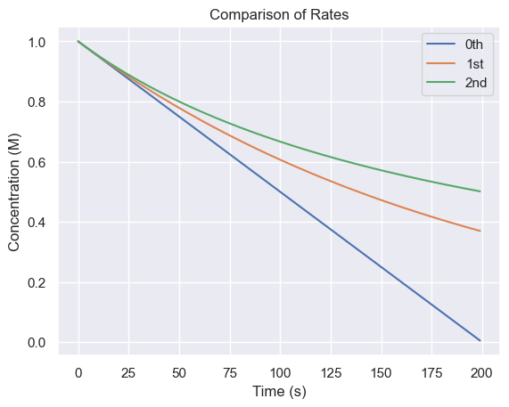
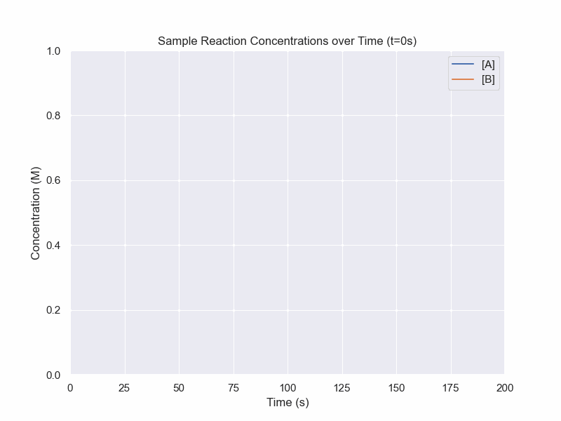

Kinetics
Refresher on Kinetics
Elementary Reactions
Let us consider elementary reactions - that is they have no intermediate steps:
Let A, B be the reactants and P be the product (not Phosphorus).
For
single step unidirectional reactions, we can write an equation that describes the rate of change in chemical species:
$$A\rightarrow P$$
Instinctively, if this is the only reaction taking place, the concentration of A should be going down by the same rate by which the concentration of P goes up.
$$\frac{d[A]}{dt}=-\frac{d[P]}{dt}$$
It would also be intuitive to think that the higher the concentration of A, the faster the reaction would go.
Probabilitistically, a justification would be that each A molecule has a chance per unit time of converting to P.
Then if each conversion is independent, you would expect the rate of conversion to be directly proportional to the number of A.
Thus, we also get the relationship.
$$\frac{d[P]}{dt}=k[A]$$
where k is a constant of proportionality which is specific to the reaction. We will call this the
rate constant.
Let us now consider a bimolecular,
single-step unidirectional reaction:
$$A+B\rightarrow P$$
By similar logic, we can write the following relationships:
$$\frac{d[A]}{dt}=\frac{d[B]}{dt}=-\frac{d[P]}{dt}$$
$$\frac{d[P]}{dt}=k[A][B]$$
Integrated Rate Laws
This section will involve solving a few simple differential equations.
As thsi section is more concerned with the results and logic rather than the math, the derivations will not be especially rigorous and will be playing fast and loose with some math.
Let us consider the simplest case, a reaction that has a rate-limiting step that is independent of concentration.
$$\frac{d[P]}{dt}=k$$
If the mathematicians aren't watching, you can "multiply" by dt to get
$$d[P]=kdt$$
While not good notation, we can itegrate from time t=0 to a a generic time t=t.
$$\int_0^td[P]=\int_0^tkdt$$
$$[P]_t-[P]_0=kt$$
We would expect this as it is a constant rate process, so it should just be the rate multiplied by the amount of time.
Now for a more realistic example.
Consider a reaction with the rate law:
$$\frac{d[A]}{dt}=-k[A]$$
Again we will want each variable to be on its own side. Using some algebra and abuse of notation, we get
$$\frac{d[A]}{[A]}=-kdt$$
We can treat it as if we were integrating each side seperately.
$$\int \frac{d[A]}{[A]}=\int-kdt$$
While it may appear intimidating, we are essentially just integrating \(\frac{1}{x}\) and a constant.
$$\ln([A]_t)-\ln([A]_0)=-kt$$
In these sorts of problems, once we integrate, we then try to isolate the concentration at time t.
$$\ln([A]_t)=\ln([A]_0)-kt$$
This is the linear form for a first order reaction. If you were trying to experimentally determine k, you could do regression for this equation.
Exponentiating things, we get
$$[A]_t=[A]_0e^{-kt}$$
This is the
first order integrated rate law
Now, we have an equation that describes the concentration over time, not just the rate.
For completeness, consider a rate law corresponding to a reaction with the rate law:
$$\frac{d[A]}{dt}=-k[A]^2$$
$$\frac{d[A]}{[A]^2}=-kdt$$
$$\int\frac{d[A]}{[A]^2}=\int-kdt$$
$$\frac{-1}{[A]_t}-\frac{-1}{[A]_0}=-kt$$
$$\frac{1}{[A]_t}=\frac{1}{[A]_0}+kt$$
This is the linear form for a second order reaction. If you were trying to experimentally determine k, this would be the equaiton that you would attempt to fit.
$$[A]_t=\frac{1}{\frac{1}{[A]_0}+kt}$$

So far, the integrated rate laws have been univariate. Differential equations with multiple variables are possible and are called "Partial Differential Equations" or PDEs.
Dynamic Equilibrium
Until now, we have been considering reactions that only go in one direction. In many reactions, however, products are also undergoing the reverse reaction. Eventually the concentrations of the products and reactants will no longer change. However, this does not mean that chemical reactions are not still going on.
What is actually happening is the forward reaction is happening at the same rate as the reverse reaction. This is known as
dynamic equilibrium.
Let us consider a system where two elementary reactions are going on:
$$A\rightarrow^{k_1} B$$
$$B\rightarrow^{k_{-1}} A$$
As shorthand, we can combine these two lines into one:
$$A\rightleftharpoons_{k_{-1}}^{k_1} B$$
We can now introduce a more general form of writing rate laws:
- Write the rate laws for all the unidirectional reactions
- Write the change in concentration for a species as the sum of the simple rate laws where it is a product minus the sum of all the simple rate laws where it is a reactant
Now let's write the simple rate laws for each component:
A:
- Produced
- \(k_{-1}[B]\)
- Consumed
- \(k_1[A]\)
B:
- Produced
- \(k_1[A]\)
- Consumed
- \(k_{-1}[B]\)
Thus,
$$\frac{d[A]}{dt}=k_{-1}[B]-k_1[A]$$
$$\frac{d[B]}{dt}=k_{1}[A]-k_{-1}[B]$$
Sometimes you will hear about a "rate-limiting step" in reactions which is an approximation to simplify the equation when one reaction is much slower.
Now, due to the simplicity of the problem, there is a symmetry, but it can get much more complex. Now let's set the rate of change to be 0 to see what will happen once we reach dynamic equilibrium.
$$0=k_{-1}[B]-k_{1}[A]$$
$$\frac{[B]}{[A]}=\frac{k_1}{k_{-1}}$$
This ratio of rate constants is called the equilirbium constant, denoted with a capital K, which gives some sort of ratio of products to reactants.
In a later chapter, we will look at kinetics for more complicated series of reactions.
Simulation of Dynamic Equilibrium

Python code:
conc_A = 1
conc_B = 0
k_1 = 3e-2
k_neg1 = 5e-3
dt = 1
conc_df = pd.DataFrame(columns=['t','A','B'])
for i in range (0,201):
conc_df.loc[i] = [i*dt,conc_A,conc_B]
dA = (k_neg1*conc_B - k_1*conc_A)*dt
dB = (-k_neg1*conc_B + k_1*conc_A)*dt
conc_A += dA
conc_B += dB
fig, ax = plt.subplots(figsize=(8,6))
ax.set_xlim(0,200)
ax.set_ylim(0,1)
lineA, = ax.plot([])
lineB, = ax.plot([])
def animate(frame_num):
lineA.set_data((conc_df.loc[:frame_num]['t'],conc_df.loc[:frame_num]['A']))
lineB.set_data((conc_df.loc[:frame_num]['t'],conc_df.loc[:frame_num]['B']))
plt.title(f"Sample Reaction Concentrations over Time (t={frame_num}s)")
return lineA,lineB
plt.ylabel("Concentration (M)")
plt.xlabel("Time (s)")
plt.legend(['[A]','[B]'])
anim = FuncAnimation(fig, animate, frames=200, interval=15)
anim.save('DynamicEquilibrium.gif')
plt.show()